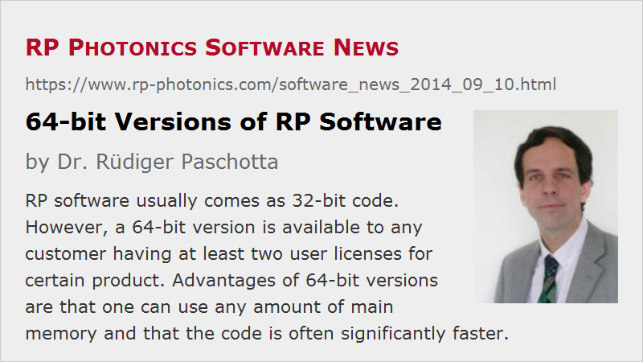

64-bit Versions of RP Software
Posted on 2014-09-10 in the RP Photonics Software News (available as e-mail newsletter!)
Permanent link: https://www.rp-photonics.com/software_news_2014_09_10.html
Author: Dr. Rüdiger Paschotta, RP Photonics Consulting GmbH
Abstract: RP software usually comes as 32-bit code. However, a 64-bit version is available to any customer having at least two user licenses for certain product. Advantages of 64-bit versions are that one can use any amount of main memory and that the code is often significantly faster.

We are sometimes asked whether our software is made for a 32-bit or 64-bit operating system, or whether a 64-bit version of the software would be available. Here, I briefly explain the technical background and what is available.
Windows programs can be made in two flavors: compiled to 32-bit or 64-bit code. Essentially, 32-bit code uses the CPU in some old-fashioned way where the used CPU registers are only 32 bits wide. 64-bit code utilizes larger registers, which can not only be more efficient, but also enormously widens the available address space for memory. For most purposes, however, this does not make him significant difference for the user. However, 64-bit programs can address any amount of main memory, whereas 32-bit programs are limited to roughly 3 GB. Another aspect is that 64-bit code may be faster or slower, depending on details of the program and the used compiler.
64-bit programs can run only on 64-bit Windows versions, whereas 32-bit programs can be used both on 32-bit and 64-bit Windows versions. As many people still use 32-bit Windows, and also a 32-bit version will be sufficient for most users, we normally deliver 32-bit versions. Therefore, our software can be installed on essentially any PC, except if the Windows version is extremely old (later than XP).
There are some cases where users want to do very sophisticated simulation runs where a lot of memory is required. For example, they may want to propagate ultrashort pulses with a very high temporal and spectral resolution through long pieces of optical fiber, storing the resulting pulses at many positions in the fiber. Another example is beam propagation on large numerical grids. For such cases, a 64-bit version of the software may be required. Also, our 64-bit versions normally do the computations significantly faster (although we cannot guarantee that they will be faster in all cases).
Our policy is that we offer a 64-bit version of any product to any customer who has purchased at least two user licenses for that product. The customer then has the choice to use either version on any of the licensed PCs. (Important change in 03/2016: every user now has the free choice; see the Software News of 2016-03-09.)
Those having only a single user license can acquire additional user licenses at a much reduced price – that offer remains valid at any time. In effect, you can use our software on more than one PC and/or obtain 64-bit versions while increasing the total cost by far less than a factor of two. If you are interested, we are happy to give you a quotation.
This article is a posting of the RP Photonics Software News, authored by Dr. Rüdiger Paschotta. You may link to this page, because its location is permanent.
Note that you can also receive the articles in the form of a newsletter or with an RSS feed.
|  |
If you like this article, share it with your friends and colleagues, e.g. via social media:
These sharing buttons are implemented in a privacy-friendly way!